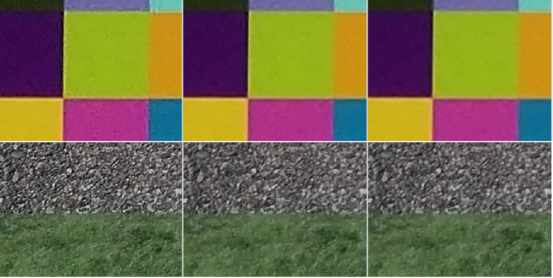
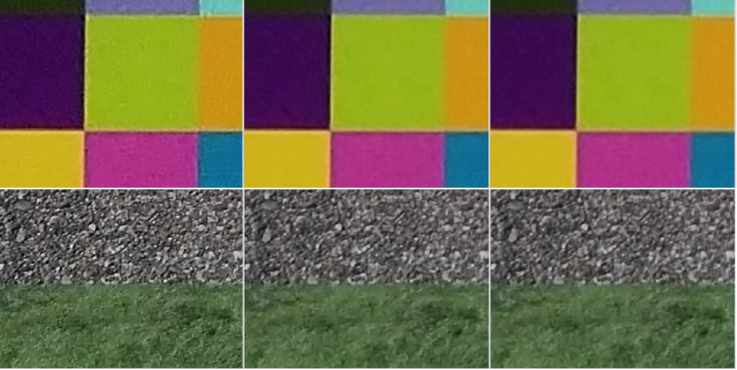

These examples illustrate the effects of adjusting specific ABF parameter values for a snapshot project
Effects of the edge softness parameter
Figure : (L) edge_softness=3, (C) edge_softness=8, (R)
edge_softness=12. A larger value results in softened edges, less noise, and less
detail.


Effects of the noise preserve base parameter
Figure : (L) noise_prsv_base = all 1.0 array, (R) noise_prsv_base =
all 0.6 array. The associated radial anchor table = [0.0, 0.4, 0.6, 0.8,
1.0].

The noise_prsv_base parameter defines the percentage of preserved noise at each radial anchor point. A lower value for noise_prsv_base results in stronger noise reduction as shown in the illustration